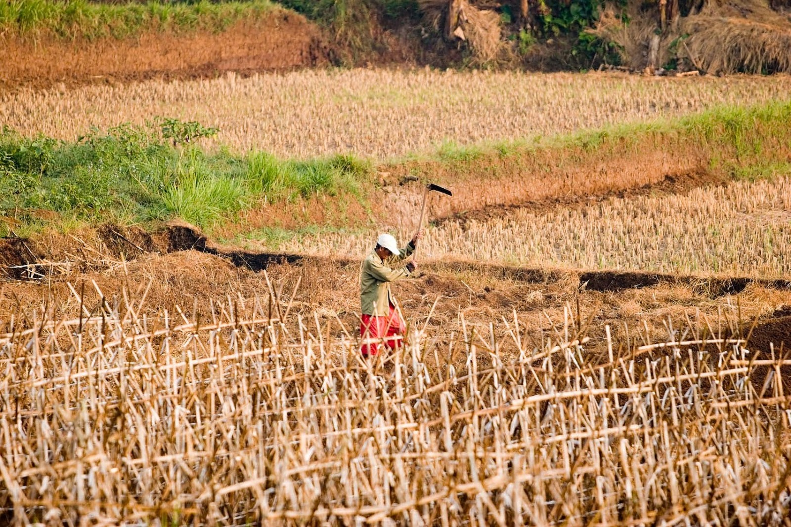

Federal Water Tap, April 27: Supreme Court Takes Middle Road in Key Groundwater Ruling
The U.S. Supreme Court delivered a highly anticipated ruling on the scope of the Clean Water Act, while the EPA finalized a narrower definition of the nation’s cornerstone water-pollution law.A Senate committee circulates draft versions of two water infrastructure bills.The EPA asks its science advisers to address scientific and technical questions related to the new coronavirus.The DOE assesses the environmental impacts of pumped storage hydropower.And lastly, the DOE offers funding to design electricity-generating turbines for tidal or river currents.
'The difficulty with this approach, we recognize, is that it does not, on its own, clearly explain how to deal with middle instances.But there are too many potentially relevant factors applicable to factually different cases for this Court now to use more specific language.'— Excerpt from a U.S. Supreme Court ruling in
County of Maui v.Hawaii Wildlife Fund
, a case that questioned whether Clean Water Act permits are needed when pollutants are discharged to groundwater before ending up in a river, lake, or ocean.The approach the court took was the middle road, arguing that permits are necessary in some cases but not others.
$38 million: Funding available for companies designing electricity-generating turbines that will be deployed in tidal or river currents.(Department of Energy)
Supreme Court Clean Water Act Ruling The nine justices on the high court sought a middle path when ruling on a closely watched case on the scope of the Clean Water Act.
The case centered on a question with broad application: does the pollution of groundwater that even reaches an ocean, lake, or river require a Clean Water Act permit?Appeals courts have heard arguments in cases involving oil pipelines, sewage treatment plants, and ponds that hold coal waste.
The 6 to 3 decision in
County of Maui v.Hawaii Wildlife Fund — a sewage treatment case — was a partial Yes.The judges sent the case back to the Ninth Circuit for reconsideration.
The court determined that a permit is needed when pollution discharges to groundwater are the 'functional equivalent' of sending polluted water through a pipe into a river, a scenario that was the primary target of the Clean Water Act.
That answer is somewhere between the test applied by the Ninth Circuit — of a more absolute 'fairly traceable' connection between groundwater and surface water — and the rigid arguments from Maui County and the federal government, which claimed that no discharges to groundwater should be regulated.
The practical implications?Seemingly more case by case determinations of permitting requirements, legal experts said.Even the court, in its opinion, acknowledged that 'a more absolute position…may be easier to administer.'
Ultimately, the decision, write the lawyers of Womble Bond Dickinson, 'seems likely to inject yet more uncertainty' into the matter of groundwater pollution and Clean Water Act permits.
In context: U.S. Courts Issue Contradictory Rulings on Groundwater and the Clean Water Act
Senate Circulates Water Infrastructure Bills The Senate Environment and Public Works Committee posted draft versions of two bills that would authorize $19.5 billion for water projects.
America’s Water Infrastructure Act is a $17 billion proposal that funds Army Corps of Engineers projects for deepening ports, expanding water storage, and studies to assess flooding on the Great Lakes shoreline.It also increases authorized funding for the federal government’s low-interest loan program for sewer systems to $3 billion a year by 2024.
The Drinking Water Infrastructure Act is a $2.5 billion proposal for investing in the systems for delivering and treating drinking water.
Waters of the United States Rule Published The EPA finalized the Trump administration’s narrower definition of waterbodies that are protected under the Clean Water Act.
Publication of the rule in the Federal Register is the final step in the government’s rulemaking process.Lawsuits against the administration’s action can now proceed.
Pumped Storage Hydropower The Department of Energy’s national laboratories evaluated the environmental impacts of two types of pumped storage hydropower.
The report found that closed-loop systems generally have lower environmental damage than open-loop systems, largely because closed-loop systems are not connected to flowing rivers.
There are 43 pumped storage projects in the United States.They are all open-loop.
Pumped storage is a form of electricity generation that links an upper and lower reservoir.Water is released from the upper reservoir during high-demand periods and then stored in the lower reservoir.The water is pumped back to the upper reservoir when electricity is in low demand.The process is a net loss of energy, but it is useful for meeting peak demands.
EPA Science Board Meets on Covid-19 On April 30, the EPA will convene a public meeting of its science advisers to discuss scientific and technical matters related to the new coronavirus pandemic that require the agency’s attention and research.
Water and wastewater is one of the research categories that the board has been asked to address.Topics of inquiry include: the persistence of SARS-CoV-2 in surface water and wastewater, and whether the virus is deactivated in sewage sludge.
The meeting will be available through webcast and teleconference.Registration can be found at the above link.
In context: Virus Hunters Find Coronavirus Clues in Sewage
USDA Updates Rural Water Programs The U.S. Department of Agriculture expanded the scope of its rural water programs, a series of definitional changes that will allow for broader use of federal funds.
The changes were required in the 2018 farm bill.
Federal Water Tap is a weekly digest spotting trends in U.S. government water policy.To get more water news, follow Circle of Blue on Twitter and sign up for our newsletter.
Brett writes about agriculture, energy, infrastructure, and the politics and economics of water in the United States.He also writes the Federal Water Tap, Circle of Blue’s weekly digest of U.S. government water news.He is the winner of two Society of Environmental Journalists reporting awards, one of the top honors in American environmental journalism: first place for explanatory reporting for a series on septic system pollution in the United States(2016) and third place for beat reporting in a small market (2014).He received the Sierra Club’s Distinguished Service Award in 2018.Brett lives in Seattle, where he hikes the mountains and bakes pies.Contact Brett Walton
Posted On: 2020-04-27T06:00:27
Posted By: Brett Walton

Content Date: 2020-04-27
Download Date: 2021-05-12
Document ID: L0C04B2ZS